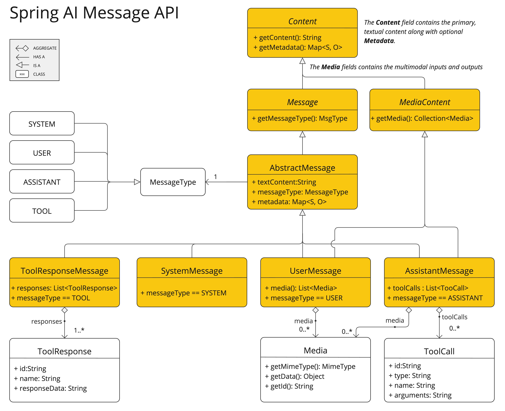

提示 #
提示是指导 AI 模型生成特定输出的输入。这些提示的设计和措辞会显著影响模型的响应。
在 Spring AI 中与 AI 模型交互的最低级别上，在 Spring AI 中处理提示有点类似于在 Spring MVC 中管理“视图”。这涉及使用动态内容的占位符创建大量文本。然后，根据用户请求或应用程序中的其他代码替换这些占位符。另一个类比是包含某些表达式的占位符的 SQL 语句。
随着 Spring AI 的发展，它将引入更高级别的抽象来与 AI 模型交互。本节中描述的基础类在角色和功能方面可以比作 JDBC。例如，ChatModel 类类似于 JDK 中的核心 JDBC 库。ChatClient 类可以比作 JdbcClient，它构建在 ChatModel 之上，并通过 Advisor 提供更高级的构造
要考虑过去与模型的交互，请使用额外的上下文文档来增强提示，并引入代理行为。
随着时间的推移，提示的结构在 AI 领域内不断发展。最初，提示是简单的字符串。随着时间的推移，它们逐渐包括特定输入的占位符，例如 AI 模型可以识别的“USER：”。OpenAI 通过在 AI 模型处理之前将多个消息字符串分类为不同的角色，为提示引入了更多结构。
API 概述 #
提示 #
通常使用 ChatModel 的 call（） 方法，该方法采用 Prompt 实例并返回 ChatResponse。
Prompt 类充当一系列有组织的 Message 对象和请求 ChatOptions 的容器。每条 Message 在提示中都包含一个独特的角色，其内容和意图不同。这些角色可以包含各种元素，从用户查询到 AI 生成的对相关背景信息的响应。这种安排支持与 AI 模型进行复杂而详细的交互，因为提示是由多条消息构建的，每条消息都分配了在对话中扮演的特定角色。
下面是 Prompt 类的截断版本，为简洁起见，省略了构造函数和实用程序方法：
public class Prompt implements ModelRequest<List<Message>> {
private final List<Message> messages;
private ChatOptions chatOptions;
}
消息 #
Message 接口封装了 Prompt 文本内容、元数据属性的集合和称为 MessageType 的分类。
接口定义如下：
public interface Content {
String getContent();
Map<String, Object> getMetadata();
}
public interface Message extends Content {
MessageType getMessageType();
}
多模式消息类型还实现了 ```MediaContent` 接口，该接口提供了 Media`` 内容对象列表。
public interface MediaContent extends Content {
Collection<Media> getMedia();
}
Message 接口的各种实现对应于 AI 模型可以处理的不同类别的消息。模型根据对话角色区分消息类别。

这些角色由 MessageType 有效地映射，如下所述。
角色 #
每条消息都分配有一个特定的角色。这些角色对消息进行分类，阐明 AI 模型提示的每个部分的上下文和目的。这种结构化的方法增强了与 AI 通信的细微差别和有效性，因为提示的每个部分在交互中都发挥着独特且定义的作用。 主要角色包括：
- System Role（系统角色）：指导 AI 的行为和响应风格，为 AI 如何解释和回复输入设置参数或规则。这类似于在开始对话之前向 AI 提供指令。
- User Role：表示用户的输入 – 他们对 AI 的问题、命令或陈述。这个角色是基础，因为它构成了 AI 响应的基础。
- Assistant Role（助理角色）：AI 对用户输入的响应。它不仅仅是一个答案或反应，它对于保持对话的流畅性至关重要。通过跟踪 AI 之前的响应（其“助理角色”消息），系统可确保连贯且与上下文相关的交互。Assistant 消息也可能包含函数工具调用请求信息。它就像 AI 中的一项特殊功能，在需要时用于执行特定功能，例如计算、获取数据或除交谈之外的其他任务。
- 工具/功能角色： 工具/功能角色 侧重于返回其他信息以响应工具调用助手消息。 角色在 Spring AI 中表示为枚举，如下所示
public enum MessageType {
USER("user"),
ASSISTANT("assistant"),
SYSTEM("system"),
TOOL("tool");
...
}
提示模板 #
Spring AI 中提示模板的一个关键组件是 PromptTemplate 类，该类旨在促进创建结构化提示，然后将其发送到 AI 模型进行处理
public class PromptTemplate implements PromptTemplateActions, PromptTemplateMessageActions {
// Other methods to be discussed later
}
此类使用 TemplateRenderer API 来渲染模板。默认情况下，Spring AI 使用 StTemplateRenderer 实现，该实现基于 Terence Parr 开发的开源 [
StringTemplate](
https://www.stringtemplate.org/) 引擎。模板变量由 {} 语法标识，但您也可以将分隔符配置为使用其他语法。
public interface TemplateRenderer extends BiFunction<String, Map<String, Object>, String> {
@Override
String apply(String template, Map<String, Object> variables);
}
Spring AI 使用 TemplateRenderer 接口来处理变量到模板字符串的实际替换。默认实现使用 [
[StringTemplate]。](#StringTemplate) 如果您需要自定义逻辑，您可以提供自己的 TemplateRenderer 实现。对于不需要模板渲染的场景（例如，模板字符串已经完成），你可以使用提供的 NoOpTemplateRenderer。
PromptTemplate promptTemplate = PromptTemplate.builder()
.renderer(StTemplateRenderer.builder().startDelimiterToken('<').endDelimiterToken('>').build())
.template("""
Tell me the names of 5 movies whose soundtrack was composed by <composer>.
""")
.build();
String prompt = promptTemplate.render(Map.of("composer", "John Williams"));
此类实现的接口支持提示创建的不同方面：
PromptTemplateStringActions 侧重于创建和呈现提示字符串，表示提示生成的最基本形式。
PromptTemplate``Message``Actions 是为通过生成和作 Message 对象来创建提示而量身定制的。
```PromptTemplateActions` 旨在返回 Prompt对象，该对象可以传递给ChatModel`` 以生成响应。
虽然这些接口可能在许多项目中没有广泛使用，但它们显示了创建提示的不同方法。
实现的接口包括
public interface PromptTemplateStringActions {
String render();
String render(Map<String, Object> model);
}
方法 String render（）： 将提示模板渲染为最终字符串格式，无需外部输入，适用于没有占位符或动态内容的模板。
方法 String render(Map<String, Object> model) ：增强渲染功能以包含动态内容。它使用 Map<String、Object>，其中映射键是提示模板中的占位符名称，值是要插入的动态内容。
public interface PromptTemplateMessageActions {
Message createMessage();
Message createMessage(List<Media> mediaList);
Message createMessage(Map<String, Object> model);
}
方法 Message createMessage（）： 创建一个不带额外数据的 Message 对象，用于静态或预定义的消息内容。
方法 ```Message createMessage(List<Media> mediaList)` ：创建具有静态文本和媒体内容的 Message`` 对象。
方法 Message createMessage(Map<String, Object> model) ：扩展消息创建以集成动态内容，接受 Map<String， Object>，其中每个条目表示消息模板中的占位符及其相应的动态值。
public interface PromptTemplateActions extends PromptTemplateStringActions {
Prompt create();
Prompt create(ChatOptions modelOptions);
Prompt create(Map<String, Object> model);
Prompt create(Map<String, Object> model, ChatOptions modelOptions);
}
方法 Prompt create（）： 生成一个没有外部数据输入的 Prompt 对象，非常适合静态或预定义的提示。
方法 ```Promptcreate(ChatOptions modelOptions)` ：生成一个Prompt`` 对象，该对象没有外部数据输入，并且具有聊天请求的特定选项。
方法 Prompt create(Map<String, Object> model) ：扩展提示创建功能以包含动态内容，采用 Map<String， Object>，其中每个映射条目都是提示模板及其关联的动态值中的占位符。
方法 Prompt create(Map<String, Object> model, ChatOptions modelOptions) ：扩展提示创建功能以包含动态内容，采用 Map<String、Object>，其中每个映射条目都是提示模板中的占位符及其关联的动态值，以及聊天请求的特定选项。
示例用法 #
下面显示了一个来自 [ PromptTemplates 上的 AI Workshop]( https://github.com/Azure-Samples/spring-ai-azure-workshop/blob/main/2-README-prompt-templating.md) 的简单示例。
PromptTemplate promptTemplate = new PromptTemplate("Tell me a {adjective} joke about {topic}");
Prompt prompt = promptTemplate.create(Map.of("adjective", adjective, "topic", topic));
return chatModel.call(prompt).getResult();
另一个示例摘自 [ AI Workshop on Roles]( https://github.com/Azure-Samples/spring-ai-azure-workshop/blob/main/3-README-prompt-roles.md) 如下所示。
String userText = """
Tell me about three famous pirates from the Golden Age of Piracy and why they did.
Write at least a sentence for each pirate.
""";
Message userMessage = new UserMessage(userText);
String systemText = """
You are a helpful AI assistant that helps people find information.
Your name is {name}
You should reply to the user's request with your name and also in the style of a {voice}.
""";
SystemPromptTemplate systemPromptTemplate = new SystemPromptTemplate(systemText);
Message systemMessage = systemPromptTemplate.createMessage(Map.of("name", name, "voice", voice));
Prompt prompt = new Prompt(List.of(userMessage, systemMessage));
List<Generation> response = chatModel.call(prompt).getResults();
这显示了如何通过使用 SystemPromptTemplate 创建一个 Message 来构建 Prompt 实例，其中系统角色传入占位符值。然后，带有角色 user 的消息将与角色系统的消息组合在一起以形成提示。然后将提示传递给 ChatModel 以获得生成响应。
使用自定义模板渲染器 #
您可以通过实现 TemplateRenderer 接口并将其传递给 PromptTemplate 构造函数来使用自定义模板渲染器。您也可以继续使用默认的 StTemplateRenderer，但使用自定义配置。
默认情况下，模板变量由 {} 语法标识。如果您计划在提示中包含 JSON，则可能需要使用不同的语法以避免与 JSON 语法冲突。例如，您可以使用 < 和 > 分隔符。
PromptTemplate promptTemplate = PromptTemplate.builder()
.renderer(StTemplateRenderer.builder().startDelimiterToken('<').endDelimiterToken('>').build())
.template("""
Tell me the names of 5 movies whose soundtrack was composed by <composer>.
""")
.build();
String prompt = promptTemplate.render(Map.of("composer", "John Williams"));
使用资源而不是原始字符串 #
Spring AI 支持抽象 `org.springframework.core.io.Resource``` ，因此您可以将提示数据放在可以直接在 PromptTemplate中使用的文件中。例如，您可以在 Spring 托管组件中定义一个字段来检索Resource``。
@Value("classpath:/prompts/system-message.st")
private Resource systemResource;
然后将该资源直接传递给 SystemPromptTemplate。
SystemPromptTemplate systemPromptTemplate = new SystemPromptTemplate(systemResource);
快速工程 #
在生成式 AI 中，创建提示是开发人员的一项关键任务。这些提示的质量和结构会显著影响 AI 输出的有效性。投入时间和精力来设计周到的提示可以大大改善 AI 的结果。 共享和讨论提示是 AI 社区的常见做法。这种协作方法不仅创造了一个共享的学习环境，而且还导致了高效提示的识别和使用。 该领域的研究通常涉及分析和比较不同的提示，以评估它们在各种情况下的有效性。例如，一项重要研究表明，以“深呼吸并逐步解决这个问题”开始提示会显著提高解决问题的效率。这凸显了精心选择的语言对生成式 AI 系统性能的影响。 掌握最有效地使用提示，尤其是在 AI 技术快速发展的情况下，是一项持续的挑战。您应该认识到提示工程的重要性，并考虑使用来自社区和研究的见解来改进提示创建策略。
创建有效的提示 #
在开发提示时，重要的是要集成几个关键组件以确保清晰度和有效性：
- 说明 ：向 AI 提供清晰直接的指示，类似于您与人交流的方式。这种清晰度对于帮助 AI “理解” 预期内容至关重要。
- 外部背景 ：必要时包括 AI 响应的相关背景信息或具体指导。这个 “外部上下文” 构建了提示并帮助 AI 掌握整体场景。
- 用户输入 ：这是简单的部分 - 用户的直接请求或问题构成了提示的核心。
- 输出指示器 ： 这方面可能很棘手。它涉及为 AI 的响应指定所需的格式，例如 JSON。但是，请注意，AI 可能并不总是严格遵守此格式。例如，它可能会在实际 JSON 数据之前预置“here is your JSON”之类的短语，或者有时会生成不准确的类似 JSON 的结构。 在制作提示时，向 AI 提供预期问答格式的示例可能非常有益。这种做法有助于 AI “理解” 查询的结构和意图，从而获得更精确和相关的响应。虽然本文档没有深入探讨这些技术，但它们为进一步探索 AI 提示工程提供了一个起点。 以下是用于进一步调查的资源列表。
简单的技术 #
- 将大量文本缩减为简洁的摘要，捕捉关键点和主要思想，同时省略不太关键的细节。
- 侧重于根据用户提出的问题从提供的文本中得出特定答案。它是关于精确定位和提取相关信息以响应查询。
- 系统地将文本分类为预定义的类别或组，分析文本并根据其内容将其分配到最合适的类别。
- 创建交互式对话，AI 可以在其中与用户进行来回通信，模拟自然的对话流。
- 根据特定的用户要求或描述生成功能代码片段，将自然语言指令转换为可执行代码。
高级技术 #
- 使模型能够做出准确的预测或响应，只需最少或没有特定问题类型的先前示例，即可使用学习的泛化理解新任务并采取行动。
- 链接多个 AI 响应以创建连贯且上下文感知的对话。它帮助 AI 维护讨论的主线，确保相关性和连续性。
- 在这种方法中，AI 首先分析（推理）输入，然后确定最合适的行动方案或响应。它将理解与决策相结合。
Microsoft 指南 #
- Microsoft 提供了一种结构化的方法来开发和优化提示。该框架指导用户创建有效的提示，从 AI 模型中引出所需的响应，优化交互以提高清晰度和效率。
令 牌 #
令牌在 AI 模型处理文本的方式中至关重要，它充当将单词（正如我们理解的）转换为 AI 模型可以处理的格式的桥梁。这种转换分两个阶段进行：单词在输入时转换为词元，然后在输出中将这些词元转换回词。 分词化是将文本分解为分词的过程，是 AI 模型理解和处理语言的基础。AI 模型使用这种标记化格式来理解和响应提示。 为了更好地理解标记，请将它们视为单词的一部分。通常，一个标记表示大约四分之三的单词。例如，莎士比亚全集总计约 900,000 字，可翻译成约 120 万个代币。 尝试使用 [ OpenAI Tokenizer UI]( https://platform.openai.com/tokenizer)，看看单词是如何转换为标记的。 除了在 AI 处理中的技术作用之外，令牌还具有实际意义，尤其是在计费和模型功能方面：
- 计费：AI 模型服务通常根据 Token 使用情况计费。输入 （prompt） 和输出 （response） 都会计入总令牌计数，因此较短的提示更具成本效益。
- 模型限制：不同的 AI 模型具有不同的令牌限制，定义了它们的“上下文窗口”——它们一次可以处理的最大信息量。例如，GPT-3 的限制为 4K 令牌，而 Claude 2 和 Meta Llama 2 等其他模型限制为 100K 令牌，一些研究模型最多可以处理 100 万个令牌。
- Context Window：模型的 Token 限制决定了其 Context Window。模型不会处理超过此限制的输入。仅发送最少的有效信息集进行处理至关重要。例如，在查询“哈姆雷特”时，无需包含莎士比亚所有其他作品中的标记。
- 响应元数据：来自 AI 模型的响应元数据包括使用的令牌数量，这是管理使用和成本的重要信息。